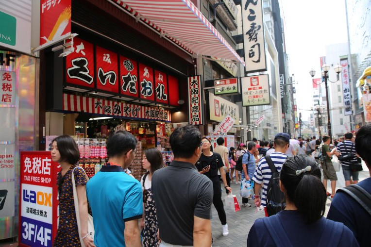
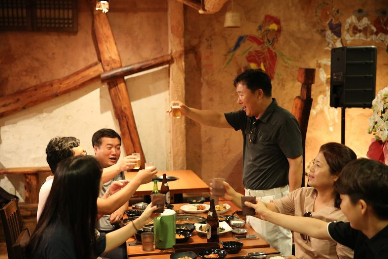

일본 연수가 벌써 셋째날이 되었어요~
이제 일본스러워지려고하는데.. 벌써 삼일째니...흑흑

어쨌든 ㅎ 셋째날은 되었고
또 즐거운 여행을 시작합니다 ~ 헤헤
동대사는 나라 시에 있는 일본불교 화엄종의 대본산이고 남도(南都) 7대사의 하나입니다~ 뭐 그만큼 일본 불교에서 중요한곳이라는거죠~
청동으로 만든 대불상
소년원 학생들이 만들었다는 동대사 모형
구멍뚫린 나무기둥
부처님의 16제자 중 하나인 빈주루존자의 목상까지
이국적인 일본불교를 만날수 있었어요~
헉 ! 사슴이 있어요 ㅎ

사슴과 사진도 찍고
사슴에게 줄 센베를 사서
오메 맛난그~~~~~~~~~~~
먹이주기도 해봅니다~~
정말 잘먹네요 !!
오늘의 점심 : 일식정식
정결하게 차려진
일본정식으로 점심을 든든히 ^^

맛나요~~~ 맛나 ㅎ

오사카성
오사카를 왔는데
오사카의 상징인 '오사카성'을 안볼수가 없죠~~
오사카 성은 16세기에 '도요토미 히데요시'가 일본 통일을 달성한 후 자신의 권력을 과시하기 위해 지은 성이라고 합니다.
무려 10만 명의 인부를 동원하여 지은것이라네요... ㅎㄷㄷ
큰 돌 보이죠?
세상에 저 큰 돌들을 모두 사람들이 직접 운반했다네요~
겁나 힘들었것죠 !! ~~~

오사카성 내부로 들어가
8층 전망대에 올라가서 오사카 전경도 감상하고~
전시관에 들려 꼼꼼히 오사카성에 대한 지식을 얻고 ^^
도톤보리/신사이바시
자유시간입니다~
뭐 패키지여행에서는 '자유시간'이 또 큰 재미죠~
저녁식사전까지 주어진 자유시간에 도돈보리에서 각자 맘껏 즐기기 !!

신사이바시 상점가를 쭉 들러보면서 드럭스토어 쇼핑도 하구요~
유명한 파블로 치즈타르트도 먹어보고
도톤보리 강가에서 공연도 보고~
전광판보세요 ㅎㅎㅎ
대광식구들 보이죠? ㅎㅎㅎ

일본에서 맛 본 김치찌개

ㅎㅎ 드뎌 김치찌개를 먹게됩니다
"오메 좋은그"
라면사리도 넣고

션한 맥주로 건배도 하고
"건~~~~배"
맛있는 저녁을 먹으면서
대광가족의 사랑은 또 깊어져 갔습니다~~~
텐진마쯔리
편의점에 들려 일본의 유명한 과실주 '호로요이' 를 사들고

오사카에서 유명한 나니와 요고가와 불꽃놀이 구경을 갑니다~~
운도좋죠~ 딱 가는날 불꽃놀이도 하고 ^^
저희들이 묵은 호텔 앞에서도 불꽃놀이를 볼수 있다기에~
더 편안하게 볼 수 있었어요 ~

우와~~~ 하늘에서
화려한 불꽃이 밤하늘을 수놓습니다~~!!
"오메 멋진그"
자 그럼~ 얼마나 멋져븐지
(저희는 한시간동안이나 봤습니다만~ 헤헤)
준비해논 영상 보시죠 !! ㅎㅎㅎ


흑 벌써 셋째날이 끝났네요~~~~~ ^^